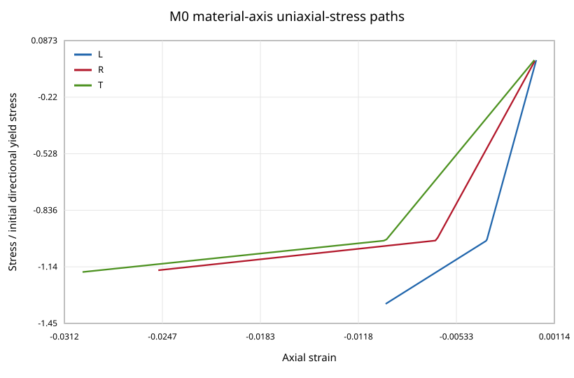

発明的なパラメータカードで、実材料データに依存しない安全な再現例を提供。
Uses an invented parameter card to provide a safe reproducible example independent of real material data.
公開コードPublic code
直交異方弾性とHill型塑性を、戻り写像・整合接線・物理テストまで実装した材料点ソルバー。
A material-point solver implementing orthotropic elasticity and Hill plasticity with return mapping, consistent tangent, and physics tests.
技術スタック / Tech Stack
00

01
発明的なパラメータカードで、実材料データに依存しない安全な再現例を提供。
Uses an invented parameter card to provide a safe reproducible example independent of real material data.
解析的一貫接線を有限差分と照合し、回転共変性も独立に検証。
Checks the analytic consistent tangent against finite differences and independently verifies rotation covariance.
降伏残差、散逸、決定論的負荷経路、刻み収束を含む物理ベースの検証を実装。
Implements physics-based checks for yield residual, dissipation, deterministic paths, and step convergence.
02
木材向け異方性弾塑性更新を、数値精度と物理整合性の両面から検証する。
Validate an anisotropic elastoplastic update for wood in both numerical accuracy and physical consistency.
直交異方弾性とHill降伏面を後退Euler・Newton法で積分し、一貫接線を導出する。
Integrate orthotropic elasticity and a Hill yield surface with backward Euler/Newton and derive a consistent tangent.
有限差分接線、座標回転、塑性散逸、時間刻み収束、決定論的回帰テストを行う。
Test finite-difference tangents, coordinate rotations, plastic dissipation, time-step convergence, and deterministic regression.
最大降伏残差1.46e-10、接線相対誤差3.93e-10、刻み収束次数1.04を確認。
Achieved maximum yield residual 1.46e-10, tangent relative error 3.93e-10, and step-convergence order 1.04.
03
M0材料点のみで、引張圧縮非対称、損傷、有限要素組込み、構造安全性は対象外。
This M0 material-point model excludes tension-compression asymmetry, damage, finite-element integration, and structural safety.
04
公開コードPublic code
架空パラメータ、完全な数値検証、テストを備えた独立公開リポジトリとして安全に公開可能。
Invented parameters, complete numerical validation, and tests make this safe as a standalone public repository.